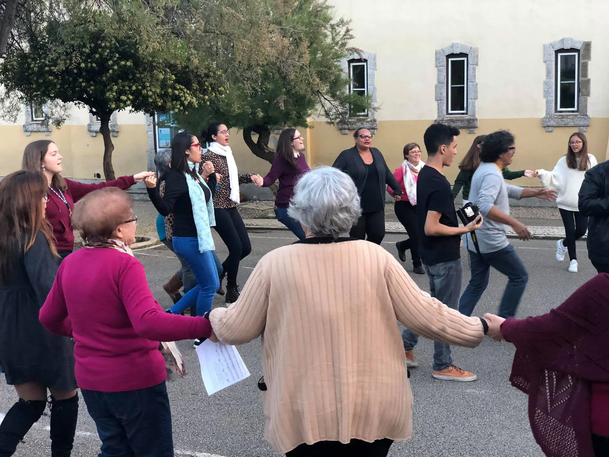

Welcome
An entry point for anyone starting or returning to singing, without pressure.

Collective singing · Group singing
A group for singing, connecting people and building community.
Why this name?
In music, tutti simply means: everyone. It's a term used since the Baroque, when composers began writing, alongside the solo parts, the exact moment the whole orchestra or choir should enter together. After a solo, a few voices, or different sections, comes that moment when the whole ensemble sings at once. That feeling gives Tutti VoxLaci its name: a space for collective singing where what matters isn't who sings loudest or who has the most experience, but what happens when we truly start listening to one another. Singing in a group creates connections almost instantly. We breathe together, listen together, and build something no one could create alone. Tutti is the moment “I sing” becomes “we sing”.
All voices
Sing in a choir with no audition, in Cascais, with VoxLaci. An accessible space for collective singing, open to everyone.
Tutti is collective singing at its most direct: an accessible space where group experience, listening and the joy of making music together are central. As across VoxLaci, being an amateur here carries the word's oldest sense: someone who loves what they do.
Why sing here
An entry point for anyone starting or returning to singing, without pressure.
Rehearsing and performing together creates bonds that grow naturally, built on trust and mutual respect.
Stepping out of your comfort zone, learning new repertoire and gaining confidence to express yourself in public.
Your voice starts here
Other paths